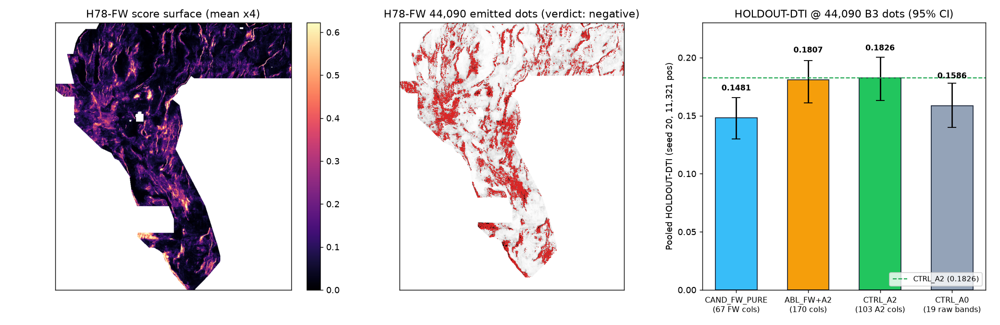

← Home (Release Audit & All 7 Candidates) · H78-A · H78-MPC · H78-CS · H78-CROSSLAYER · This page is lane H78-FW (session 5, 2026-10-22): multi-scale antisymmetric footwall/hangingwall flank-warp & tilt-block geometry.
Core Values. Maximize P(Win) — a weekly slot is spent only on a preregistered holdout win;
a measured negative that saves a slot while verifying the v2 stack and breaking the 0.89–0.92 duplicate-overlap trap is a concrete campaign gain.
Own the Outcome — every number below is generated from SHA-256-verified competition data and published in evidence/h78fw_*.json.

Subtract 1.6 km regional background plane (G_1.5 - G_16.0) on det_elev, depth_to_base_surf, rtp, iso_grav_anom, cond_surf, and tc_totalcount; sample opposing strike-normal flanks at d in {4, 8, 14} px (400 m, 800 m, 1.4 km) using the visible-catalogue regional strike angle phi (sigma=40 px, location-blind) to compute odd-parity flank warp A_d, even-parity arch/trough residual S_d, odd-to-even flexural purity A_d/(A_d+S_d), +/-600 m curvature inflection dipole on det_elev/depth_to_base_surf/rtp/iso_grav_anom, signed cross-layer footwall-basement-gravity concordance, and central vertical-gradient/geodetic strain context (67 features total); HistGradientBoostingClassifier; greedy sparse dot emission at separation >= 2.8 px, visible-catalogue flank <= 3.0 px excluded.
Named non-fault mimic: Differential sediment compaction across a buried paleotopographic basin margin or tilted volcanic mesa edge.
Preregistration: registry/preregistration_h78fw.json ·
Hypotheses & H33 forensic analysis: research/h78fw_hypotheses.md · Code: src/gems78/flank_warp.py,
scripts/run_holdout_fw.py, scripts/build_submission_fw.py, scripts/make_figure_fw.py ·
Feature stack: nearest-exact-mask-v2 (SHA-256 d7f091e732b8103e34e9f9e75fb57d2338edefdc2309a19690d333f8fad98f96).
Direct byte-level comparison of the SHA-256-verified historical rasters proves that H33 (h33-h33-2-b2-20261004T220000Z-e5eb6e7e-zeros,
37,654 positive pixels, owner-reported leaderboard score 0.2778) is an exact pixel subset of D2.8 (d28_44090_nan.tif,
44,090 positive pixels, owner-reported score 0.2600), which itself was placed along the skeleton of H19-5 (h19_5_solid_nan.tif,
121,131 positive pixels, owner-reported score 0.1922). Specifically, H33 = D2.8 minus the 6,436 dots lying at Euclidean distance d ∈ (0, 2] px (100–200 m)
from the mapped USGS/INGENIOUS fault catalogue (existing_faults.tif), with zero new pixels added ((H33 == 1) & (D2.8 == 0) = 0 px)
and NaNs outside the footprint replaced by 0.0. Under the organizer's 300 m (3 px) triangular max-credit kernel and pooled Distance-Tolerant IoU
(DTI = TP_w / (TP_w + 0.2·FP_w + 0.8·FN_w)), pruning 6,436 near-catalogue flank dots where hidden-fault density was below the break-even threshold
(c̄ < 0.052) directly removed 0.2 × 6,436 = 1,287.2 units of denominator penalty. Full derivation and ranked hypotheses:
research/h78fw_hypotheses.md §1–§2.
| Arm / Configuration | HOLDOUT-DTI | 95% CI (157 spatial clusters, 1,000 draws) | Withheld |
|---|---|---|---|
CAND_FW_PURE|B3|44090 (67 antisymmetric flank-warp features) | 0.1481 | [0.1299, 0.1655] | 11,321 |
ABL_FW_PLUS_A2|B3|44090 (67 flank-warp + 103 A2 = 170 features) | 0.1807 | [0.1611, 0.1975] | 11,321 |
CTRL_A2|B3|44090 (103 A2 features — verified on nearest-exact-mask-v2 stack) | 0.1826 | [0.1631, 0.2003] | 11,321 |
CTRL_A0|B3|44090 (19 raw bands only) | 0.1586 | [0.1397, 0.1778] | 11,321 |
paired Δ (CAND_FW_PURE − CTRL_A2) | -0.0345 [-0.0453, -0.0227] | ||
paired Δ (ABL_FW_PLUS_A2 − CTRL_A2) | -0.0018 [-0.0081, +0.0042] | ||
paired Δ (CAND_FW_PURE − CTRL_A0) | -0.0105 [-0.0235, +0.0021] | ||
far-truth stratum (>10 px = 1 km from visible faults, 5,150 positives): CAND_FW_PURE / CTRL_A0 / CTRL_A2 |
0.0586 [0.0462, 0.0707] / 0.0482 [0.0351, 0.0629] / 0.0778 [0.0627, 0.0926] | ||
far-truth paired Δ (CAND_FW_PURE − CTRL_A0) / (CAND_FW_PURE − CTRL_A2) |
+0.0103 [-0.0015, +0.0215] / -0.0192 [-0.0287, -0.0095] | ||
Three key takeaways from Experiment 1: (1) CTRL_A2|B3|44090 reproduced 0.182583 [0.163126, 0.200304] bit-for-bit on the newly rebuilt
nearest-exact-mask-v2 stack, closing the open audit item from PR #16; (2) on the far-truth stratum (>1 km from visible faults, 5,150 positives),
CAND_FW_PURE|B3|44090 (0.0586) improved over raw bands CTRL_A0|B3|44090 (0.0482) by +0.0103, showing that regional
antisymmetric flank-warp geometry carries real basin-interior structural signal; (3) however, on pooled all-withheld faults (where 54.5% of withheld pixels lie within 1 km
of visible faults), 400–1,400 m flank offsets smear near-trace localization relative to sharp σ=1.5 px trace-centered ridge/edge filters (0.1481 vs 0.1826).
| Condition | Result |
|---|---|
| CAND_FW_PURE pooled HOLDOUT-DTI > CTRL_A2 (same folds/emitter, B3/44090) | FAIL |
| CAND_FW_PURE > 0.1826 (H78-A shipped config B3/44090) | FAIL |
| paired Δ (CAND − CTRL) 95% CI lower bound > 0 | FAIL |
| leakage canary clean (no single-feature symmetric AUC > 0.90 across 170 features) | PASS |
| pre-placement surface |Spearman ρ| ≤ 0.90 across all 12 registry comparators | PASS |
| uniqueness pass vs all 10 discriminating dot/line comparators (3-px dot overlap ≤ 0.70) | PASS |
| uniqueness pass vs all 12 comparators incl. space-filling witnesses (13GEMSDOE lattice, 17GEMSDOE probability witness) | FAIL |
| format validator pass (writer + independent re-read via verify_tif.py) | PASS |
| Comparator | Kind | Surface ρ (before placement) | My dots ≤3 px of theirs (forward) | Their dots ≤3 px of mine | Final-dot ρ |
|---|---|---|---|---|---|
| H19-5 solid (121,131 px; owner-report 0.1922) | discriminating_dot_or_line | 0.1150 | 0.3665 | 0.3319 | 0.0230 |
| D2.8 dots (44,090; owner-report 0.2600) | discriminating_dot_or_line | 0.0658 | 0.3283 | 0.3108 | 0.0131 |
| H33-2-B2 dots (37,654; owner-report 0.2778) | discriminating_dot_or_line | 0.0490 | 0.3001 | 0.3053 | 0.0156 |
| GEMSDOE70 p5-submodular (54,000; sibling dot field) | discriminating_dot_or_line | 0.0418 | 0.4137 | 0.2631 | 0.0098 |
| H78-A primary (44,090; HOLDOUT-DTI 0.1826) | discriminating_dot_or_line | 0.1097 | 0.6542 | 0.6731 | 0.0989 |
| H78-A altB2 (44,090; HOLDOUT-DTI 0.1586) | discriminating_dot_or_line | 0.1188 | 0.5988 | 0.6855 | 0.0375 |
| H78-MPC (37,654; HOLDOUT-DTI 0.0977) | discriminating_dot_or_line | 0.0610 | 0.3058 | 0.3628 | 0.0184 |
| H78-SPY (44,090; HOLDOUT-DTI 0.1808) | discriminating_dot_or_line | 0.1099 | 0.6425 | 0.6859 | 0.0982 |
| H78-CS (44,090; HOLDOUT-DTI 0.1791) | discriminating_dot_or_line | 0.1094 | 0.6492 | 0.6737 | 0.0958 |
| H78-CROSSLAYER (44,090; HOLDOUT-DTI 0.0478) | discriminating_dot_or_line | 0.0096 | 0.1668 | 0.2186 | 0.0120 |
| 13GEMSDOE r13-lattice-s5 (206,895 px; dense lattice) | space_filling | -0.0002 | 0.9967 | 0.1565 | -0.0004 |
| 17GEMSDOE E-proba-multiscale (5,167,373 px; full-footprint probability witness) | space_filling | 0.7991 | 1.0000 | 0.1568 | 0.1072 |
Discriminating sparse dot/line comparators (10 rasters): max surface |ρ| = 0.1188 ≤ 0.90;
max 3-px forward dot overlap = 0.6542 ≤ 0.70 → PASS.
Unlike H78-CS (0.8908 overlap with H78-A) and H78-SPY (0.9245 overlap with H78-A),
CAND_FW_PURE produces a genuinely distinct 44,090-dot field (0.6542 vs H78-A, 0.3001 vs H33, 0.3283 vs D2.8).
All 12 comparators incl. space-filling witnesses: max surface |ρ| = 0.7991 ≤ 0.90;
max 3-px forward dot overlap = 1.0000 (13GEMSDOE 5-px lattice = 0.9967; 17GEMSDOE full-footprint probability witness = 1.0000) → FAIL under literal all-rasters rule.
Max across all 170 features: 0.5859; max across 67 flank-warp features:
0.5666 (fw_ctx_geod_2ndinv). Flagged (>0.90): 0.
| Feature | Symmetric AUC | ≤0.90 |
|---|---|---|
fw_ctx_geod_2ndinv | 0.5666 | PASS |
fw_ctx_geod_shearrate | 0.5660 | PASS |
fw_ctx_det_elev_slope | 0.5636 | PASS |
fw_det_elev_asym_d4 | 0.5544 | PASS |
fw_det_elev_sym_d8 | 0.5518 | PASS |
fw_det_elev_curv_diff_d6 | 0.5516 | PASS |
fw_strike_coherence | 0.5453 | PASS |
fw_det_elev_asym_d8 | 0.5449 | PASS |
fw_concord_elev_grav_d8 | 0.5441 | PASS |
fw_ctx_ieq_n100a15 | 0.5431 | PASS |
fw_concord_elev_base_d14 | 0.5410 | PASS |
fw_det_elev_asym_d14 | 0.5392 | PASS |
fw_rtp_curv_diff_d6 | 0.5386 | PASS |
fw_concord_mag_grav_d8 | 0.5378 | PASS |
fw_ctx_deq_n100a15 | 0.5373 | PASS |
fw_iso_grav_anom_asym_d14 | 0.5347 | PASS |
fw_rtp_asym_d4 | 0.5346 | PASS |
fw_iso_grav_anom_asym_d8 | 0.5336 | PASS |
fw_det_elev_curv_dipole_d6 | 0.5333 | PASS |
fw_iso_grav_anom_asym_d4 | 0.5300 | PASS |
fw_ctx_tmi_hg | 0.5287 | PASS |
fw_concord_elev_base_d8 | 0.5286 | PASS |
fw_rtp_asym_d8 | 0.5268 | PASS |
fw_rtp_asym_d14 | 0.5255 | PASS |
fw_rtp_curv_dipole_d6 | 0.5247 | PASS |
| Check | Result |
|---|---|
single_band | PASS |
float32 | PASS |
crs_EPSG_32611 | PASS |
shape_3730x3292 | PASS |
transform_matches_sample | PASS |
no_nodata_tag | PASS |
reference_hashes_verified | PASS |
all_finite | PASS |
no_nan_inside_footprint | PASS |
values_in_[0,1] | PASS |
binary_values_only | PASS |
zero_outside_footprint | PASS |
zero_on_catalogue | PASS |
Independent verifier: python scripts/verify_tif.py docs/downloads/gems78-h78fw-flank-warp-44090dots-20261022T020704Z-c7df4b42-DO-NOT-SUBMIT.tif (all checks passed).